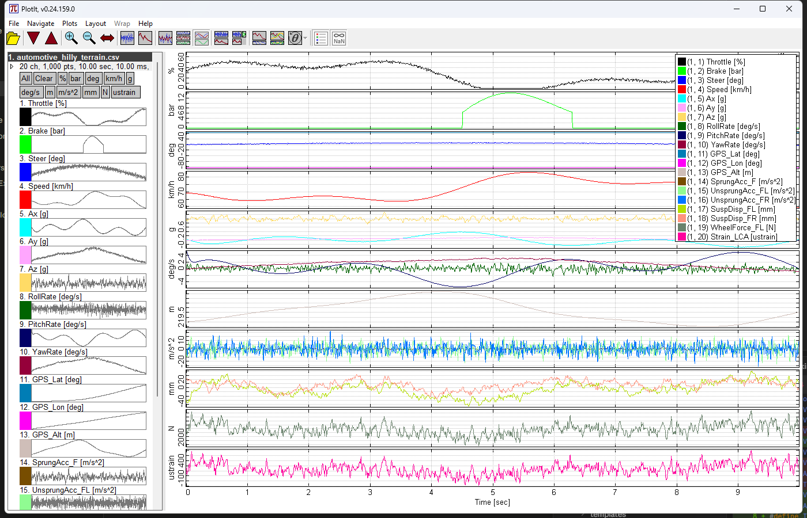
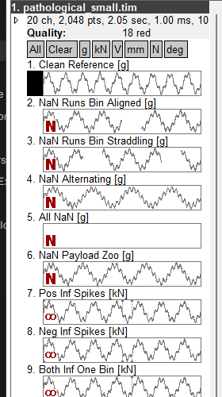
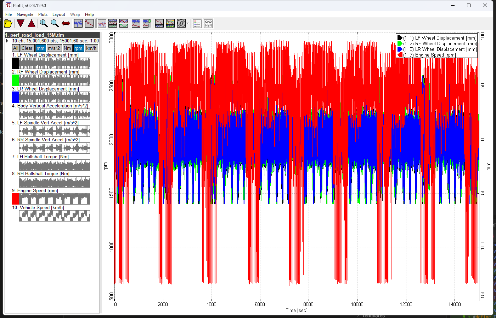

Load RPC3, PLT, fstrm, or CSV files and see tens of millions of samples plotted instantly — no installer, no companion DLLs, just one .exe.
Designed by an engineer, for engineers.
RPC3, PLT/SimCreator, fstrm/Moog Stream, and CSV — with automatic header and unit detection.
Time-domain, PSD, and CSD plots — including CSD Matrix and CSD Overlaid modes — plus per-channel histograms.
Unwrap the phase, or choose a wrap range — ±180°, 0–360°, 0–720°, and more — on cross-spectral density plots.
Overlay every channel, stack them one per row, or group rows by engineering unit.
Channels spanning very different scales split cleanly onto a second, right-hand axis — no manual setup.
Rectangle-zoom by dragging, middle-drag to pan, scroll to zoom, or double-click a point to zoom straight to it — left-click zooms up to that point, right-click zooms in from it.
NaNs, infinities, subnormals, and dead channels are flagged directly in the channel list, with a tooltip breakdown on hover.
Sample count, min/max range, and data-quality flags for every channel, right in the file tree.
Every channel gets a small preview plot in the file tree, so you can see the shape of the data before you even select it.
Hover a series to highlight its trace, right-click to remove it from the plot, left-click to bring it to the front.
Smooth zoom, pan, and redraw — no noticeable latency at 150 million plotted points.
A single self-contained .exe under 1.2 MB. No installer, no dependencies, no companion DLLs.



* Synthetic data
EnginPlot is offered as a gift. It’s shared freely because sharing is worthwhile in itself, not because anything is owed in return. There’s no expectation of support, no promise of bug fixes, no roadmap of feature additions, and no obligation to respond to issues or requests. If it’s useful to you, wonderful. If it’s not, set it down and no harm done.
Please arrive with no expectations of the author beyond the software as it sits here today.
This sentiment is offered in the spirit of David Heinemeier Hansson’s writing on open source as a gift freely given. The words here are my own; the spirit is his.
EnginPlot is free and runs on Windows 10+. Version 0.27, 1.1 MB, no installer.
Download latest releaseNothing to open yet? Download example data (.zip, 1.2 MB) — all synthetic, generated for testing. Or generate your own with the sample-data scripts.